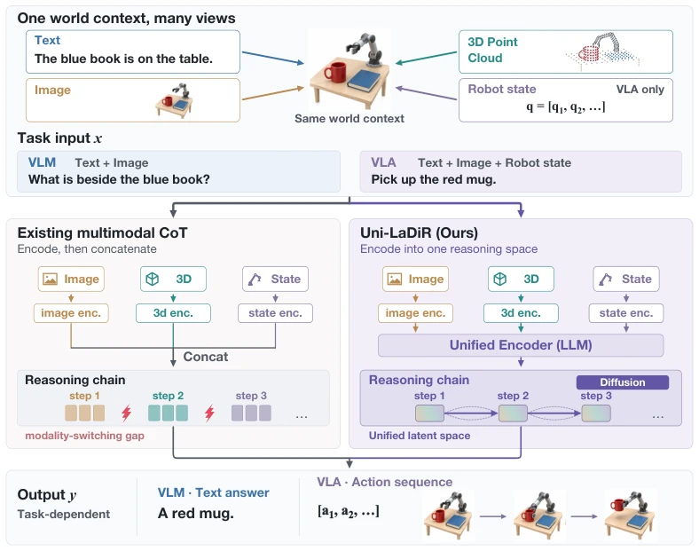
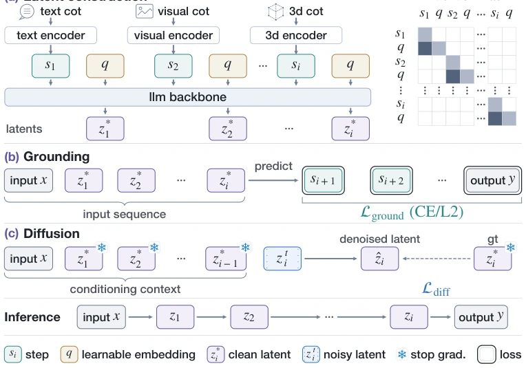
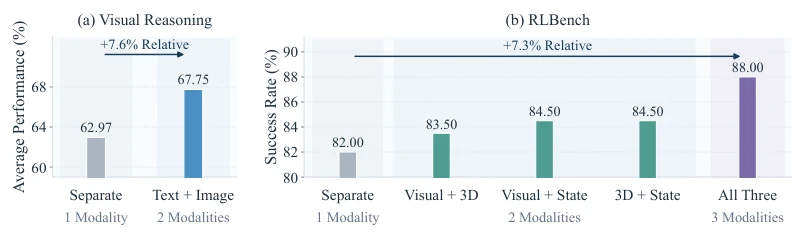
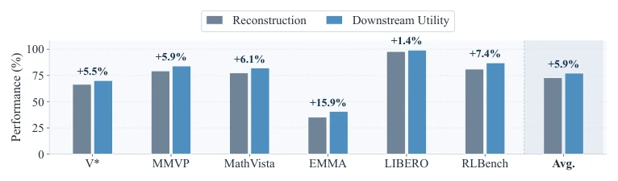
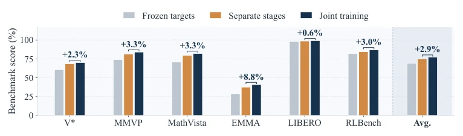
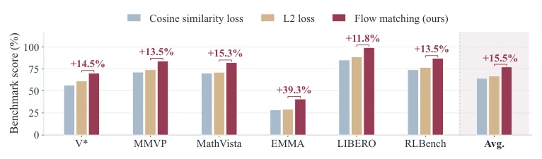
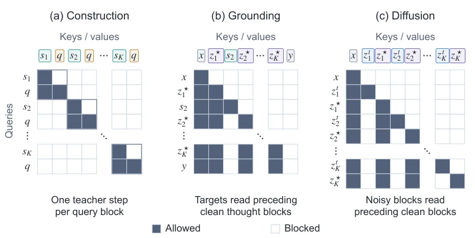
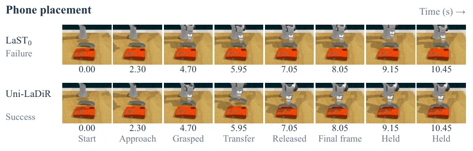

This paper has thrown another bombshell into the multimodal reasoning community: generating Chain of Thought (CoT) using diffusion models? The core logic of Uni-LaDiR is actually quite simple—do not switch modal representations back and forth during reasoning; unify them into a single latent space. Although the concept of "unified latent space" is not new, the authors introduce Diffusion into thought generation, attempting to solve the "representation gap" problem in multimodal reasoning. The experimental results are indeed impressive: VLM mathematical logic reasoning improved by 7.3%, VLA operation success rate improved by 6.1%. This data counts as solid progress in today's benchmarks that are hard to push further. However, this distillation-style training (Teacher CoT) relies on high-quality intermediate steps, and inference still requires step-by-step denoising; how is the latency problem solved? If it is just for unified representation, can't we just learn a mapping directly? Is it a bit like "using a cannon to kill a chicken" to insist on Diffusion? But considering the performance improvement, this approach is indeed more stable than pure Autoregressive (Autoregressive), at least solving the pain point of multimodal alignment.
研究动机Motivation
现有方法（Li et al., 2025b; Yang et al., 2025）通常将不同模态的 CoT 标记拼接或交错，导致模型在推理过程中不仅要处理任务逻辑，还要不断转换模态表示（如从图像特征到文本 token）。这种“模态切换间隙”（modality-switching gap）让推理动态与表示转换纠缠在一起（Gao et al., 2024）。作者认为感知可以依赖模态，但推理动态应运行在统一空间。就像 Kaelbling et al. (1998) 和 Hafner et al. (2019) 指出的，共享接口能解耦观察模态。Uni-LaDiR 试图消除这种转换开销，让中间思考步骤独立于观测模态，专注于任务相关信息。这不仅是架构调整，更是对“推理本质”的重新定义：推理不应受制于输入形式，否则模型会浪费算力在“翻译”而非“思考”上。
Existing methods (Li et al., 2025b; Yang et al., 2025) typically concatenate or interleave CoT tokens of different modalities, causing the model to not only handle task logic during reasoning but also constantly convert modal representations (e.g., from image features to text tokens). This "modality-switching gap" (modality-switching gap) entangles reasoning dynamics with representation conversion (Gao et al., 2024). The authors argue that perception can rely on modalities, but reasoning dynamics should run in a unified space. As pointed out by Kaelbling et al. (1998) and Hafner et al. (2019), shared interfaces can decouple observation modalities. Uni-LaDiR attempts to eliminate this conversion overhead, making intermediate thinking steps independent of observation modalities, focusing on task-relevant information. This is not only an architectural adjustment but also a redefinition of the "essence of reasoning": reasoning should not be constrained by input form, otherwise the model wastes computational power on "translation" rather than "thinking".

Figure 1: Multimodal reasoning in a shared latent space. Modality-specific reasoning (left) switches representations between steps. Uni-LaDiR (right) uses a shared latent space and diffu- sion to generate thought tokens for answers or actions.
Uni-LaDiR includes three core stages. First is unified latent space construction: mapping different Teacher reasoning steps such as text, image, 3D point clouds into fixed-width latent Thought Tokens via Unified Encoder, using learnable embedding q to isolate step information and prevent cross-step interference. Second is downstream supervision (Grounding): training the model to use these tokens to predict subsequent Teacher steps and final output, ensuring tokens contain task-required information (L_ground). Finally is diffusion generation: using Flow Matching to learn the conditional distribution of generating these tokens from context (L_diff), because the same context may correspond to multiple valid thinking steps. During training, joint optimization is adopted, sharing Backbone, and stopping gradients on clean tokens in the diffusion branch, forcing representations to be both useful and predictable. During inference, the model starts from input x, gradually denoises to generate z1...zK, finally predicts answer or action, without needing Teacher observation, achieving end-to-end latent reasoning.

Figure 2: Uni-LaDiR overview. During training, a shared backbone (a) encodes teacher steps into thought tokens, (b) grounds them through downstream predictions, and (c) learns their generation by diffusion. At inference, it generates thought tokens from the task input to predict an answer or action.
Experiments cover 11 VLM benchmarks (e.g., MathVista, VisualPuzzles) and 2 VLA suites (LIBERO, RLBench). Compared to the strongest baseline, VLM mathematical logic reasoning improved by an average of 7.3%, VLA operation success rate improved by 6.1% (Table 1, 2). Ablation studies show unified modality improves significantly over single modality (Fig 3), downstream supervision is better than reconstruction (Fig 4), joint training is better than staged training (Fig 5). Notably, Flow Matching improves by 14.9% over direct L2 prediction (Fig 6), proving the effectiveness of diffusion modeling multimodal trajectories. Although inference speed (16.5 Hz) is lower than some direct policies, it is 15 times faster than explicit CoT-VLA, balancing performance and efficiency. On RLBench, Uni-LaDiR outperforms LaST0 on 9/10 tasks, proving the gain of unified latent space for embodied operations.

Figure 3: Results of unifying more modalities. (a) Qwen2.5-VL-7B mean accuracy on V∗, MMVP, MathVista, and EMMA. (b) RLBench success with different modality groupings. Error bars denote standard deviation across three seeds.

Figure 4: Results of different grounding objectives.

Figure 5: Results of joint versus separate training of the encoder and reasoner.

Figure 6: Results of different latent prediction objectives.
其他图片Other Figures

Figure 7: Attention masks for parallel block training. Rows attend to columns; each cell rep- resents a token block. Grounding interleaves clean thought blocks with target streams; diffusion interleaves noisy and clean thought blocks. Clean blocks cannot read target or noisy streams.

Figure 8: Phone placement in RLBench. LaST0 does not grasp the phone within ten recorded decisions (top), while Uni-LaDiR completes placement (bottom). Columns share simulation times- tamps, excluding inference latency; the final frame is held after each recording ends.